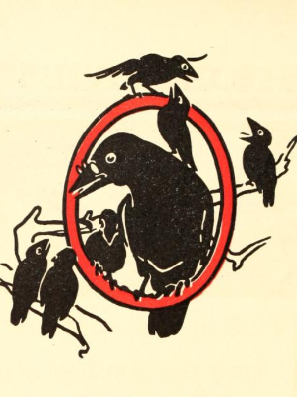

Vowel Phonogram oi Video
This lesson is about the vowel phonogram oi, the sound it makes, and how to write it. Follow along with this video to write and sound out the oi phonogram.
This lesson is about the vowel phonogram oi, the sound it makes, and how to write it. Follow along with this video to write and sound out the oi phonogram.
Play the Spelling Game.
Use pages 1-3 of the linked printable to practice the sounds for all single-sound consonants and consonant digraphs. Also, practice all the words spelled with ai, ay, eigh, ee, igh, oa, au, aw and oi.
